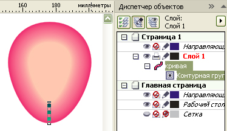
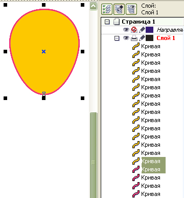
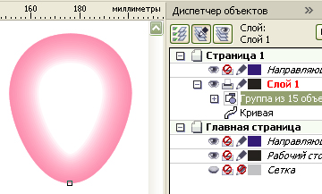
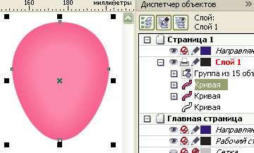
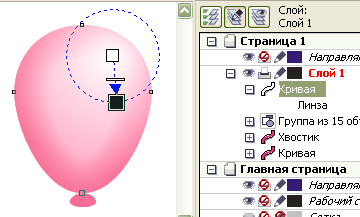
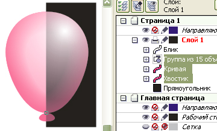
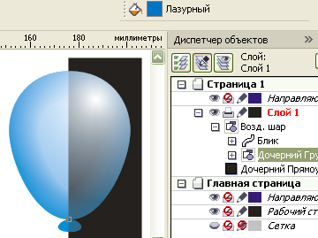
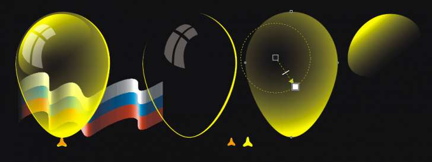

ВОЗДУШНЫЕ ШАРЫ
Редкий праздник обходится без украшения воздушными шариками. ☺☺☺☺☺☺☺
Вся прелесть воздушных шаров, которые мы создадим на этом уроке, в том, что они прозрачные. Потратив немного времени и нарисовав воздушный шарик один раз, его можно будет использовать в различных изображениях. Всего одним щелчком мыши по палитре можно изменить цвет шарика на любой другой.
Сначала создайте фигуру яйцевидной формы.
Создайте внутреннюю контурную группу так, чтобы элемент, получившийся внутри был бы размером примерно вдвое меньше исходного. В данном примере, при ширине шарика 50 мм: шаг – 0,8 мм; число шагов – 15.

Также как и в уроке «Мыльные пузыри», разъедините контурную группу и исходный объект. Разгруппируйте и, не снимая выделение, задайте любой цвет, отличный от цвета исходной фигуры (чтобы хорошо выделялись).
Создайте 15 дублей (по числу шагов контурной группы) исходной фигуры.
Выделяйте попарно два элемента: один, полученный из контурной группы, второй – дубль исходного объекта и создавайте комбинированный контур (задние минус передние).

Полученные 15 новых фигур сгруппируйте и задайте всей группе равномерную прозрачность с уровнем прозрачности 93 – 96.

Создайте два дубля исходной фигуры. Одному из них задайте равномерную прозрачность с уровнем около 70, а второму – 30.

Из второго дубля создайте «хвостик» простым трансформированием: верхний маркер перетащите несколько ниже нижнего и, зацепив один из боковых, сдавливайте к центру с нажатой Schift до подходящих размеров.
Исходную фигуру перетащите на верхний уровень, задайте белую заливку и радиальную прозрачность так, чтобы получился блик.

Сгруппируйте отдельно только цветные элементы (все кроме блика), а затем сгруппируйте группу с бликом.

Теперь, выделив группу цветных элементов, можно одним щелчком по палитре задать шарику любой цвет.

Кстати, наблюдательные возможно обратили внимание на то, что почти все скриншоты в моих уроках содержат также и Диспетчер объектов. Привыкнув работать с ним «рука об руку», Вы часто облегчаете свой труд. А в описанной только что задаче без него обойтись просто невозможно. Попробуйте, чтобы изменить цвет шарика, выделить вложенную группу, щёлкая по изображению с нажатой Ctrl. Будет выделяться блик, но не то, что нам нужно.
Примечание: если шарики помещаются на чёрном фоне, то блик можно пригасить хотя бы до 10% чёрного.
Специально для CDRPRO.RU
Копирование урока или части его и публикация любым способом без письменного согласия автора запрещено.

Solowejka, ПРИВЕТ!
Опять я со своими пятью копейками.
Но так завелось — мы с тобой в паре
Изучив кучу клипартов, посмотрев как делают люди, остановился на варианте
Стараюсь не делать воздушные шары прозрачными, они непрозрачные ярче смотрятся, но если возникает необходимость, то вот так

sergey, привет!
Я бы не стал оглядываться, как делают другие. То есть конечно лучшие образцы стоит перенимать, но, если мне не нравится, буду искать свой путь. Поставил себе задачу, сделать шар непременно прозрачным, чтобы можно было его использовать в любом изображении.
Если другие, нарисовав шар непрозрачным, тешат себя мыслью, что их шары тоже можно использовать в любом изображении (ведь непрозрачные), то мне кажется, что такие шары больше походят всё-таки не на шары, а на карамельки.
Solowejka, прозрачных шаров не бывает!